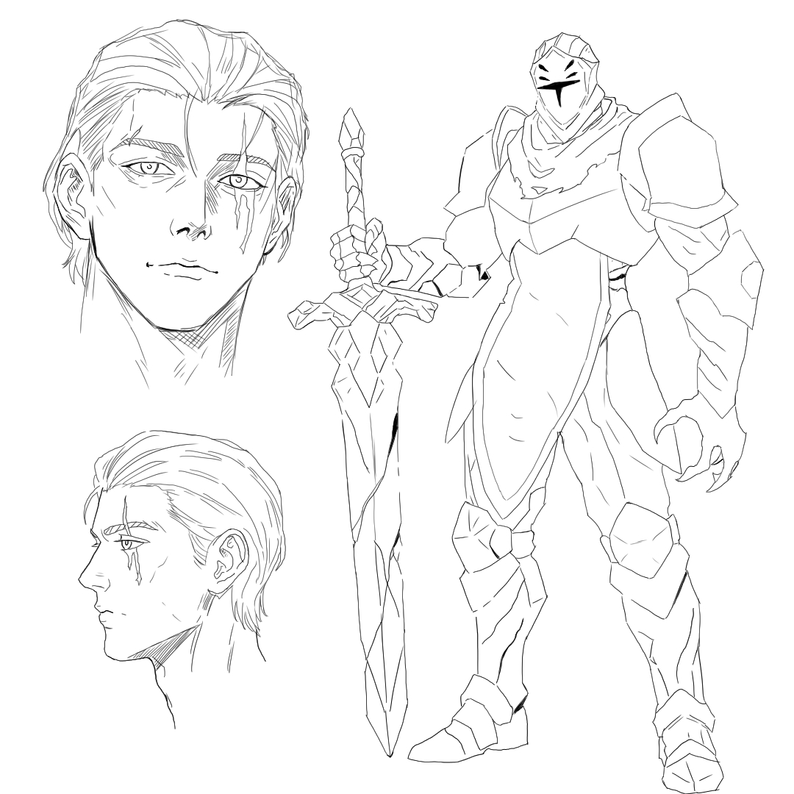
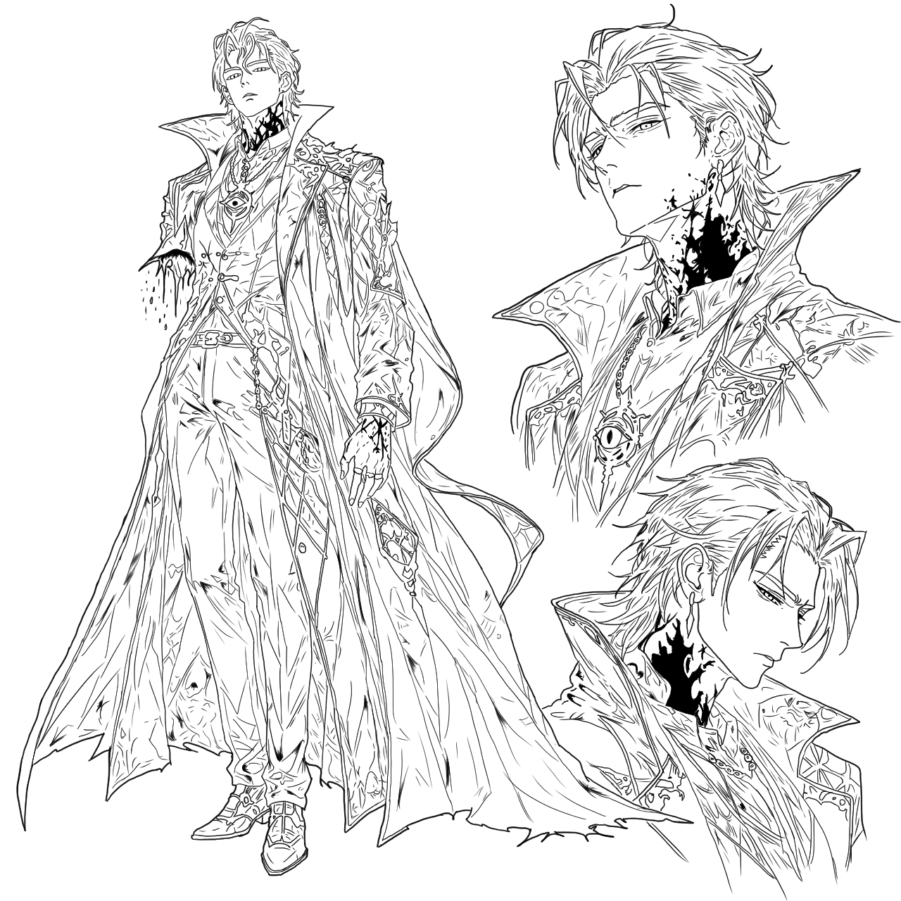
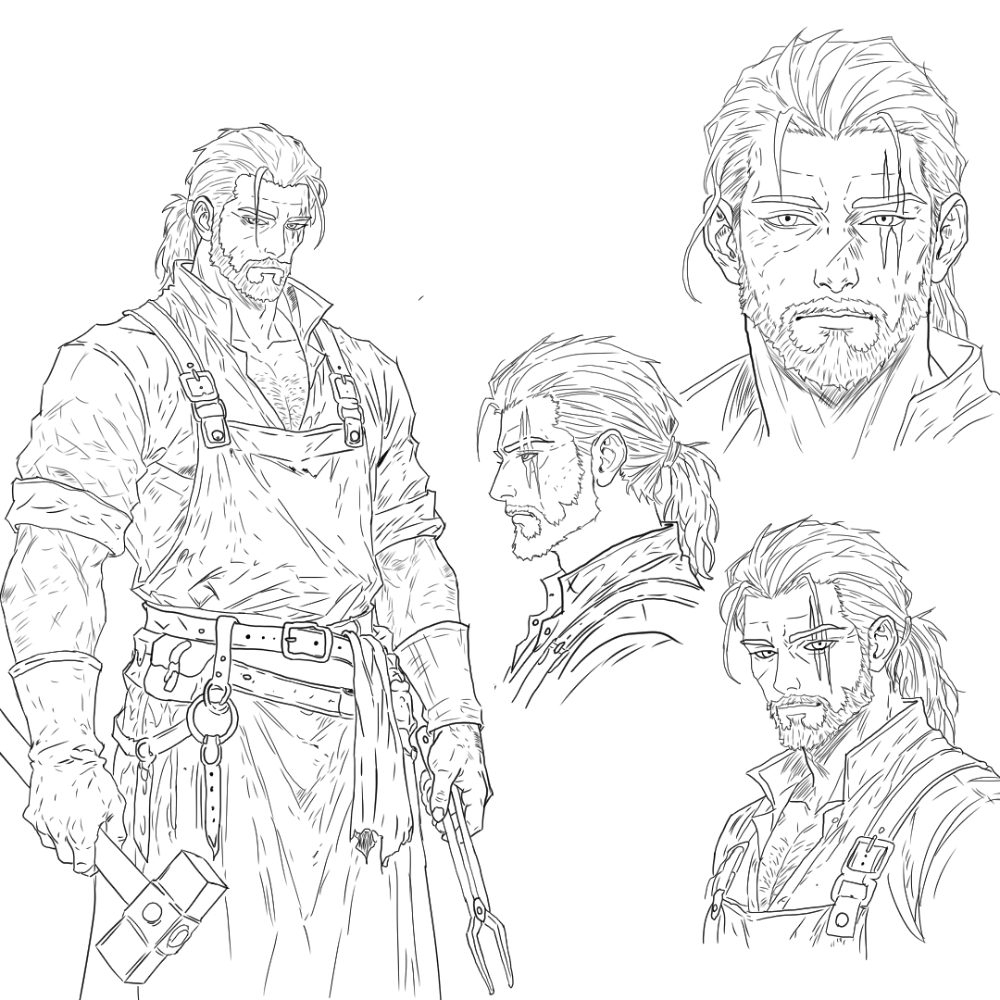
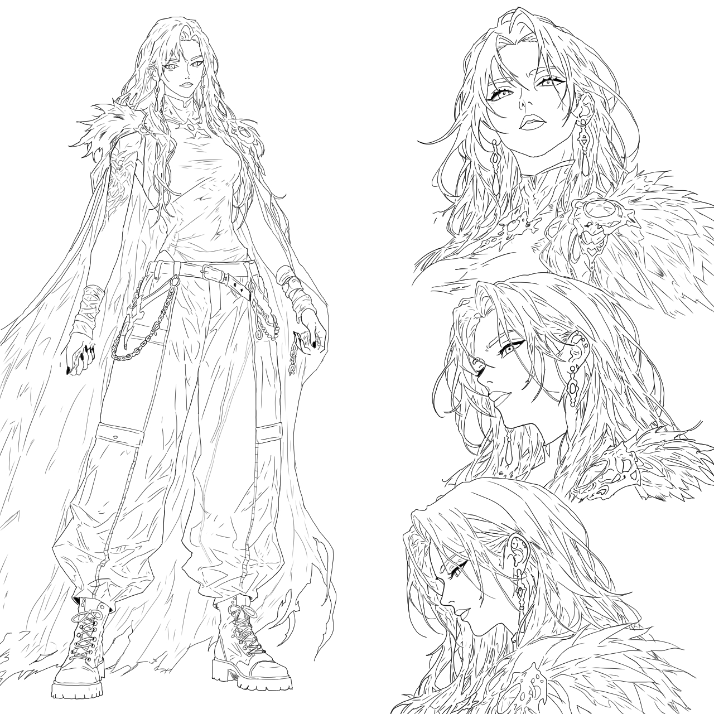

Rye Wildgoose
Rye Wildgoose fue alguna vez un niño soñador, lleno de ilusiones y con el anhelo de convertirse algún día en un gran pianista. Sin embargo, ese sueño parecía imposible desde el momento en que nació dentro de una prestigiosa familia noble de caballeros, donde el honor, la guerra y el deber estaban por encima de cualquier aspiración artística.
Desde muy pequeño, Rye vivió bajo las estrictas expectativas de su familia, especialmente las de su padre, un hombre severo que veía la música y los sueños de Rye como una vergüenza para el linaje Wildgoose. Mientras más intentaba alejarse del camino de la espada, más violentos y brutales se volvían los castigos dentro de su hogar.
Su deseo de seguir un camino distinto provocó constantes conflictos con su padre, hasta que, en un momento de desesperación y miedo, Rye intentó defenderse. Aquella noche terminó en tragedia: cometió parricidio.
Tras la muerte de su padre, Rye fue capturado y llevado ante la Iglesia por asesinar a un noble de gran influencia afiliado al poder religioso. Como castigo, fue condenado a convertirse en un Herrante, una terrible maldición impuesta sobre criminales y condenados.
Los Herrantes son soldados inmortales obligados a regresar de la muerte una y otra vez para servir como herramientas de guerra. Sin embargo, cada resurrección consume lentamente sus recuerdos, emociones y humanidad, reduciendo poco a poco a quienes portan la maldición a simples armas vacías.
Después de sobrevivir durante tres años como Herrante, Rye fue enviado al reino de Florentia junto a otros guerreros para investigar la desaparición de múltiples expediciones enviadas a regiones lejanas. Allí comenzará un viaje que cambiará por completo su destino y lo llevará a reencontrarse con una vieja amiga de su pasado.

Reymundo de EverGreen
Reymundo de EverGreen, conocido en todos los reinos como el Héroe del Amor, fue alguna vez un humilde joven con el firme deseo de proteger y ayudar a los más necesitados.
Desde niño, él y su hermano Albert EverGreen soñaban con convertirse en los más grandes caballeros de Florentia, inspirados por las leyendas y héroes que mantenían la paz en el mundo. A pesar de las dificultades, ambos entrenaron sin descanso durante años, fortaleciendo no solo sus cuerpos y habilidades, sino también el profundo vínculo fraternal que compartían.
Durante su crecimiento, llegaron a conocer y combatir junto a figuras legendarias como Raiden, el hechicero más poderoso del reino, y Eleaneore, la temida Duquesa de la Sangre. Sus hazañas y victorias comenzaron a extenderse por todos los territorios conocidos.
Gracias a su valentía, nobleza y extraordinaria fuerza, Reymundo y Albert lograron ascender hasta convertirse en dos de los legendarios 15 Héroes de la Armonía, guerreros elegidos para preservar el equilibrio y la paz entre los reinos.
La destreza de Reymundo en combate, su espíritu inquebrantable y la calidez con la que protegía a los demás hicieron que fuera considerado uno de los hombres más fuertes y admirados no solo de Florentia, sino de todos los reinos conocidos.
Durante años, los Héroes de la Armonía mantuvieron la estabilidad del mundo… hasta el fatídico día en que el cielo se abrió. Aquella noche, un ser diabólico descendió desde las alturas acompañado por una presencia que muchos describieron como la encarnación misma del mal, marcando el inicio de una tragedia que cambiaría para siempre el destino del mundo.

Raiden Stormbreaker
Raiden Stormbreaker fue un prodigioso hechicero reconocido desde niño por su enorme talento. Frío y distante durante gran parte de su vida, todo cambió cuando conoció a Astrid Sinclair, la mujer que le enseñó a apreciar la vida y el verdadero valor del conocimiento.
En su juventud mantuvo una intensa rivalidad con Reymundo de EverGreen, buscando demostrar que era superior a él. Con el tiempo, ambos terminaron convirtiéndose en grandes amigos.
La tranquilidad de Raiden terminó cuando una extraña enfermedad consumió su pueblo y acabó con la vida de Astrid. Desesperado, estuvo a punto de convertirse en un hechicero oscuro para intentar revivirla.
Sin embargo, fue detenido por Reymundo, quien le recordó que debía honrarla haciendo lo correcto. Desde entonces, Raiden dedicó todo su conocimiento a la medicina y la alquimia, logrando crear una cura que salvó miles de vidas.
Años después, cuando el ser diabólico descendió del cielo y desató su maldición sobre el mundo, Raiden fue infectado por aquella oscuridad. Antes de desaparecer por completo, ayudó a Reymundo a realizar un pacto con un demonio para proteger a la humanidad.
Durante aquel evento perdió uno de su brazo derecho y quedó gravemente marcado por la corrupción. Ahora, el legendario hechicero permanece encerrado en su antigua mansión, esperando el día de su final… a menos que todavía exista una forma de salvar el mundo.

Gerhman Bondblood
Gerhman Bondblood fue alguna vez un legendario caballero proveniente de unas tierras lejanas donde la oscuridad y la guerra consumían todo a su paso. Desde joven sobrevivió enfrentándose a monstruos y criaturas que pocos hombres se atrevían siquiera a mirar.
Cansado de vivir rodeado de muerte, abandonó su hogar y viajó hasta Florentia, donde rápidamente ganó reconocimiento como un poderoso cazador de bestias y seres míticos. Gracias a su valentía y fuerza, terminó formando parte de los legendarios Héroes de la Armonía.
A pesar de su fama como guerrero, todo cambió cuando conoció a Elaine de Sunshine, una mujer que le enseñó a apreciar la tranquilidad y la paz. Después de casarse con ella, Gerhman decidió abandonar la espada para convertirse en herrero y vivir una vida lejos de la guerra.
Poco tiempo después nació su hijo, convirtiéndose en el mayor orgullo de su vida. Sin embargo, la gran enfermedad que azotó al reino terminó arrebatándole la vida a Elaine, la misma tragedia que destruyó la felicidad de Raiden.
Aun con el dolor, Gerhman siguió adelante por su hijo, criándolo con todo el amor que aún le quedaba. Pero años después, cuando el caos comenzó a extenderse por el mundo, caballeros de la Iglesia Ortodoxa secuestraron al niño para realizar experimentos prohibidos.
Tras años de búsqueda, Gerhman descubrió la horrible verdad: su hijo había sido fusionado con una monstruosa criatura de madera y convertido en un arma viviente. Desde entonces vaga por el mundo cazando monstruos y forjando armas mientras intenta encontrar el paradero de su hijo.
Su destino finalmente cambia al encontrarse con Rye Wildgoose, quien decide ayudarlo a cumplir el deseo que lo ha mantenido vivo durante tantos años: encontrar a su hijo y liberarlo del monstruo en el que fue convertido.

Ophelia Bloodrose
Ophelia Bloodrose es una vampira de sangre real que ha vivido más de 300 años, marcada por la tragedia, la pérdida y la soledad. Nació en las tierras de Bloodrose, un reino oculto donde los vampiros convivían alejados de la humanidad. Desde que tuvo conciencia sirvió con absoluta lealtad a Lenore Drakenth, una poderosa vampira noble a quien veía no solo como su señora, sino también como su familia y el mayor amor de su vida.
Durante años vivieron rodeadas de tranquilidad, conocimiento y compañerismo, hasta que la Santa Inquisición descendió sobre Bloodrose acompañada de caballeros sagrados. Lo que alguna vez fue un reino lleno de vida quedó reducido a cenizas, muerte y desesperación. En medio de la masacre, Ophelia fue herida de muerte, pero antes de perderla, Lenore sacrificó parte de su propia sangre para convertirla en una vampira de sangre real y ocultarla lejos del desastre.
Cuando Ophelia despertó, regresó demasiado tarde. Encontró a Lenore crucificada bajo la luz del sol, atravesada por una estaca frente al reino que las condenó. Aquel momento destruyó todo lo que quedaba dentro de ella. Consumida por el dolor y la rabia, Ophelia erradicó a los responsables de aquella tragedia y desapareció del mundo durante años, convirtiéndose en una figura temida y marginada por la humanidad.
A pesar de la oscuridad que cargaba en su interior, nunca dejó de ayudar a quienes sufrían. Vagó por incontables pueblos protegiendo inocentes, cazando monstruos y salvando personas que jamás supieron quién era realmente. Con el paso del tiempo, las historias sobre una vampira vestida de negro comenzaron a extenderse por todo Florentia.
Muchos años después conoció a Perceval Pendragon, un joven caballero prodigio perteneciente a los legendarios 15 Héroes de la Armonía. A pesar de tener apenas 17 años, Perceval poseía una voluntad inquebrantable y una bondad capaz de desafiar incluso el odio que Ophelia sentía hacia el mundo. Durante siete años lucharon juntos, ayudando personas y enfrentándose a criaturas nacidas de la corrupción y la guerra.
Con el tiempo, Perceval devolvió esperanza al corazón de Ophelia, logrando que ella también se uniera a los héroes para proteger a los inocentes. Por primera vez en siglos, Ophelia creyó haber encontrado paz y un lugar al cual pertenecer.
Sin embargo, con la llegada de la corrupción y la caída del reino, Ophelia comprenderá una vez más que el destino siempre intenta arrebatarle todo aquello que ama.

Lyra Dawnwright
Lyra Dawnwright nació dentro de una familia noble reconocida por su elegancia, educación y prestigio dentro de Florentia. Desde pequeña creció rodeada de amor, música y sueños, desarrollando una gran pasión por las artes y especialmente por la música. Durante su juventud conoció a Rye, un joven con quien compartía una conexión inseparable. Ambos prometieron convertirse algún día en grandes músicos, pasando incontables días juntos practicando, soñando y hablando sobre el futuro.
Sin embargo, con el paso del tiempo Rye comenzó a distanciarse lentamente, hasta que finalmente fue sentenciado a convertirse en un herrante, desapareciendo casi por completo de la vida de Lyra. Poco después de este acontecimiento, el padre de Lyra fue enviado a una misión que originalmente debía cumplir el padre de Rye. Aquella expedición terminó en tragedia y su padre murió en combate.
La desgracia continuó persiguiendo a la familia Dawnwright. Tiempo después, el hermano mayor de Lyra también perdió la vida, dejando únicamente a Lyra y a su madre intentando sostener el honor de su apellido. Aprovechando su debilidad, otras familias nobles comenzaron a desprestigiar y destruir lentamente el nombre de los Dawnwright, arrebatándoles gran parte de sus riquezas, influencia y respeto dentro del reino.
Obligada a abandonar sus sueños y la vida que alguna vez deseó, Lyra decidió convertirse en caballera. Gracias a su disciplina, inteligencia y enorme talento, logró convertirse rápidamente en una guerrera reconocida dentro de Florentia, obteniendo renombre y estatus en muy poco tiempo.
Todo cambió cuando comenzaron a surgir rumores sobre la posible caída del reino y la expansión de la corrupción. Florentia decidió enviar expediciones conformadas por herrantes y caballeros para investigar el origen del peligro, y entre los nombres enviados apareció Rye.
Incapaz de ignorarlo, Lyra decidió unirse a la expedición con la esperanza de reencontrarse con su viejo amigo. Sin embargo, jamás imaginó el estado en el que encontraría a Rye, ni el terrible caos en el que el reino entero había caído.